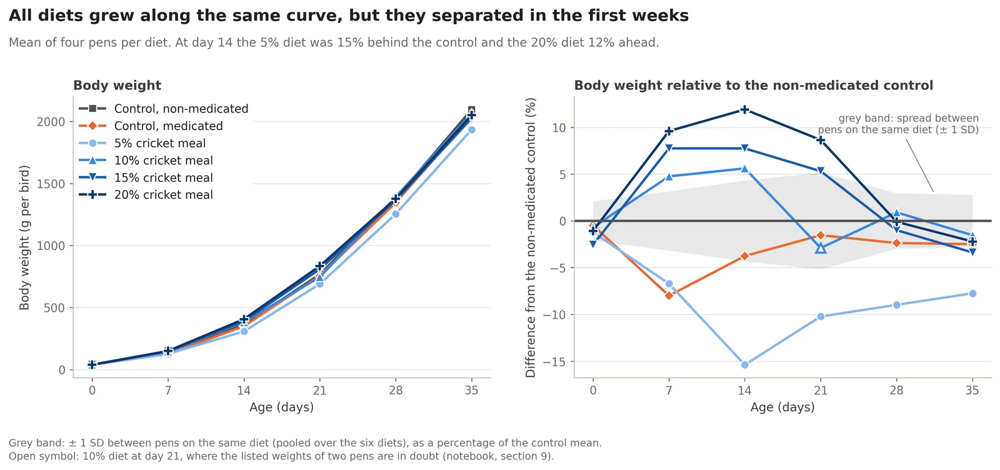
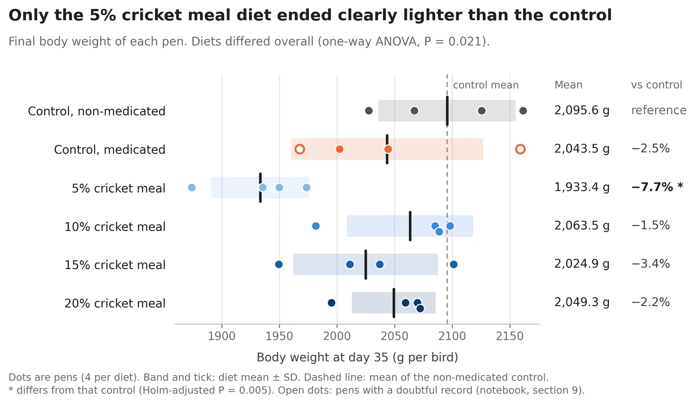

Projects / Broilers and cricket meal
Completed Open codeBroiler growth and feed efficiency with dietary cricket meal
An open 35-day trial with cricket meal at 0 to 20% of the diet. Most of the work went into turning a spreadsheet made for people into data that can be analysed, and checking it along the way.
DataRoss 308 broilers, 24 pens, 6 diets (4 pens each), Mendeley Data
QuestionHow did cricket meal affect growth and feed efficiency?
Unit of analysisThe pen, 4 per diet
Toolspandas, SciPy, scikit-learn, matplotlib
What I did
- Inspected each sheet before changing anything. Cleaning was limited to what the inspection showed to be wrong. No rows were deleted.
- Recomputed every calculation the workbook supplied (gain, feed conversion ratio, organ indices, yields) and compared them.
- Compared diets on pen values, because the pen is the experimental unit: one-way ANOVA with Holm-adjusted comparisons against the control.
- Tested simple forecasting models on pens they had not seen (leave one pen out).
What I found
- Data checks: the gain column disagrees with the weight column in 14 of 120 pen-weeks, and 21 supplied organ indices do not match the listed weights. The notebooks show each case.
- Growth: final weight differed among diets (P = 0.021). Only the 5% cricket meal pens differed from the control, 7.7% lighter.
- Feed efficiency: neither feed intake (P = 0.13) nor FCR (P = 0.59) differed clearly.
- Forecast: a straight line on day-28 weight forecast the final weight of an unseen pen within 26 g (1.3%). A random forest did worse than the straight line.
- Caveat: with four pens per diet, only large differences can be detected.
Figures
Click any figure to enlarge it.



Data: open broiler trial dataset on Mendeley Data, doi:10.17632/rj5fybnzh6.1. Figures are my own analysis.
A look at the code
Every forecast comes from a model fitted without the pen being forecast.
def predict_unseen_pens(model, features, target, pens):
"""Predict every row with a model that was fitted without the pen the row belongs to."""
return cross_val_predict(model, features, target, groups=pens, cv=LeaveOneGroupOut())
forecasts = {
"mean of the other pens (baseline)": baseline_forecast,
"last week's gain repeats": (pen_weights[28] + (pen_weights[28] - pen_weights[21])).to_numpy(),
"straight line on the weight at day 28":
predict_unseen_pens(LinearRegression(), pen_weights[[28]].to_numpy(), final_weight, pen_ids),
"random forest on the weights at days 7 to 28":
predict_unseen_pens(RandomForestRegressor(n_estimators=500, random_state=0), weights_to_day28, final_weight, pen_ids),
# ... plus a Gompertz growth curve per pen and nearest neighbours
}A Gompertz curve fitted to each pen's weights up to day 28, one of the competing forecasts.
def gompertz(age, mature_weight, b, k):
"""Gompertz growth curve: weight at a given age."""
return mature_weight * np.exp(-b * np.exp(-k * age))
def gompertz_forecast(weights, days=(0, 7, 14, 21, 28), target_day=35):
"""Fit a Gompertz curve to the weights of one pen and read off the weight at the target day."""
parameters, _ = curve_fit(gompertz, days, weights, p0=[5000, 4.8, 0.04], maxfev=20000)
return gompertz(target_day, *parameters)